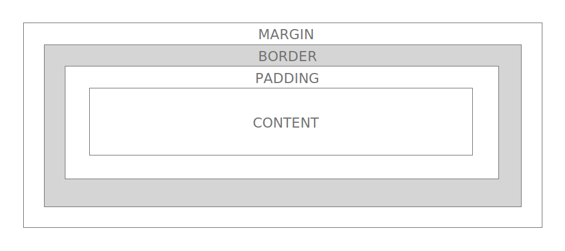
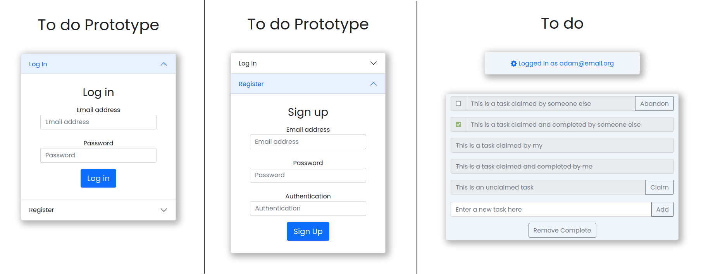
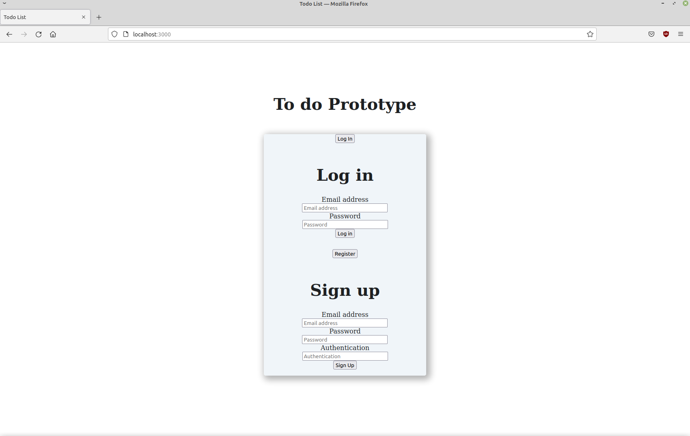
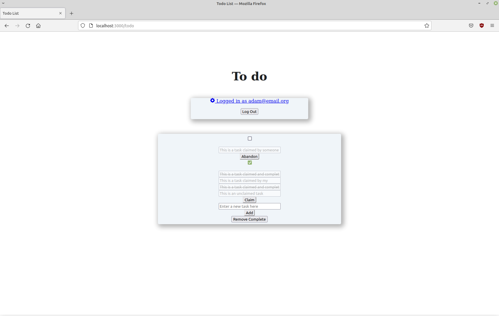
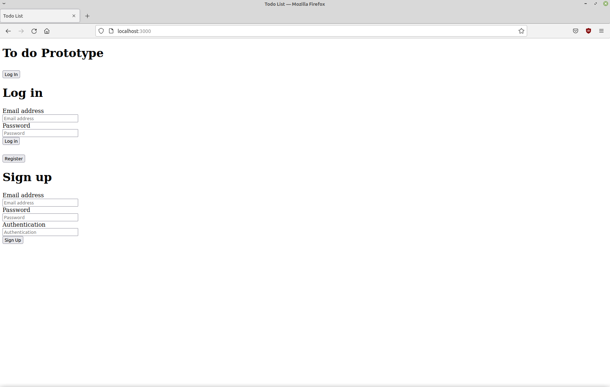
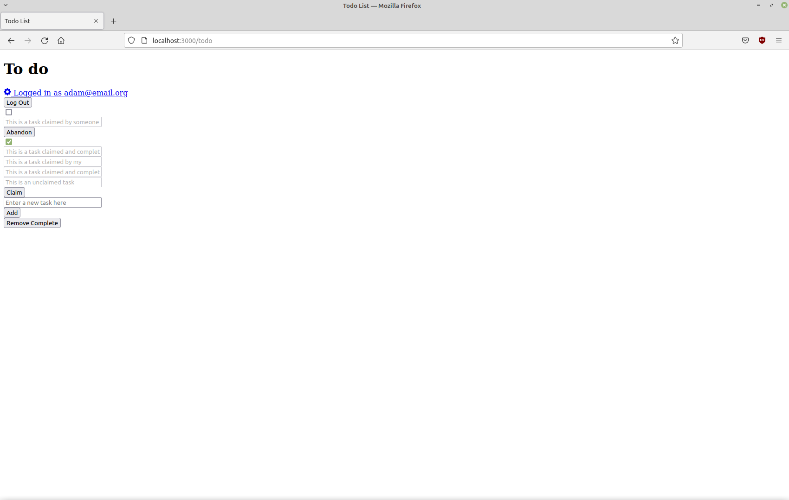

The purpose of this lab is to briefly introduce the View component of the MVC, and particularly to introduce the Hyper-Text Markup Language (HTML). In this tutorial we will explore the building blocks of the front end of the web by discussing the different elements that make up the View, what they do and how they interact. We will then focus especially on HTML, the core building block of all websites.
Lab 2: HTML and CSS
ENSE 374 - Software Engineering Management - Laboratory
University of Regina - Engineering and Applied Science - Software Systems Engineering
Lab Instructor: Adam Tilson
Computer running Windows, MacOS or Linux, with an Intel or AMD-based processor (x86 or x86-64) with administrator privileges.
- A modern web browser, with a strong preference for Firefox or Chrome
- A text editor, preferably VS Code
Over the course of the semester we will be working with the following technologies in the lab:

Over the next four weeks we will focus on different parts of the View. We will then look at the Controller for two weeks, and the Model for two weeks. We’ll come back to this often to remind you how everything works.
Hopefully by continuing to refer to this diagram, it will be clear how the different components of the system are functioning together. (This was a point students struggled with last year.)
Important: While these technologies are the key players in this version MVC, the MVC abstraction is not tied to any technology. That means you could implement an MVC using only HTML + JavaScript as long as you properly separate the view (html) from the model (JavaScript JSON Objects). We’ll disucss the MVC in more depth later!
In Web Development (web dev) there are three types of files used to render the front end which users see: HTML, CSS and JavaScript. Sometimes these are generated by front-end libraries, like Angular, React, Vue, or incorporate useful libraries like BootStrap or jQuery, but fundamentally these are the technologies browsers run on. Your browser requests these files, they are delivered from a server over the internet, and then rendered in the browser.
HTML
In modern web dev, HTML is used only to specify which components will appear on the page, and define order and hierarchy (parent-child relationship, akin to a tree data-structure). If we think of front-end web dev as building a house, HTML is the blueprint and bricks. You can build a web site using only HTML, though it will probably look like a 90’s geocites website.
CSS
Cascading Style Sheets (CSS) is used to style the website. This makes the elements appear where and how you want them to appear. In our analogy of building a house, CSS are the decorations. A popular library for CSS is BootStrap, which standardizes and speeds up design. We’ll look at CSS in Lab 3.
JavaScript
JavaScript is a programming language which runs in the browser, for adding animations and simple interactions with the website through the Document Object Model (DOM). For security reasons, there are limits to what can be done in JavaScript. In our house analogy, JavaScript is the electricity, it makes things work. We’ll look at JavaScript in Lab 4, and a popular extension, JQuery, in lab 5.
Single Responsibility
In Software Engineering, Single Responsibility principle is the idea that each module should only perform one task. We will broadly follow this concept in this course. In other words, HTML should only handle object instantiation, CSS should only handle styling, etc. However, we will see several way we can violate this, such as:
- styling elements through HTML tags
- adding web elements using the JavaScript through the DOM As much as possible, we want to avoid using these modules for unintended purposes! It makes code harder to read, understand and change.
HTML is The only required element of a website. HTML is made up of XML-like tags which surround the content and further describe what type of content it is.
Markup
The term markup comes from manuscript submission, where the editor would make notes describing how we would like to print text. For example, underline this, emphasize this, etc.
Modern markup languages similarly employs tags to explain how we want the text to be rendered. There is a default rendering style, (which is arguably pretty antiquated) and custom rendering styles, while we will look at later using CSS. For now, the important take away is that we are using HTML to explain the purpose of the enclosed content, regardless of the visual presentation, which we will fine tune later.
Quick Example:
Let’s try an example using a classic text, Bram Stoker’s Dracula:
CHAPTER I
JONATHAN HARKER’S JOURNAL
(Kept in shorthand.)
3 May. Bistritz.—Left Munich at 8:35 P. M., on 1st May, arriving at Vienna early next morning; should have arrived at 6:46, but train was an hour late. Buda-Pesth seems a wonderful place, from the glimpse which I got of it from the train and the little I could walk through the streets. I feared to go very far from the station, as we had arrived late and would start as near the correct time as possible. The impression I had was that we were leaving the West and entering the East; the most western of splendid bridges over the Danube, which is here of noble width and depth, took us among the traditions of Turkish rule.
Without any context, each chunk of text looks exactly the same.

How do we differentiate one from another? Here’s how Project Gutenberg renders the same text.

Can we do this? Let’s start by pasting this into a new file in vs code…
Main entry point: index.html
By default, the main file in html is called index.html. Let’s create a new file called index.html and paste this in.

We can preview this file in a browser by double-clicking the HTML file in our file browser…
Beautiful. Let’s start annotating it with HTML tags. The chapter section is a title, let’s embed it in a heading tag, h1.
<h1>CHAPTER I</h1>
JONATHAN HARKER’S JOURNAL
(Kept in shorthand.)
3 May. Bistritz.—Left Munich at 8:35 P. M., on 1st May, arriving at Vienna early next morning; should have arrived at 6:46, but train was an hour late. Buda-Pesth seems a wonderful place, from the glimpse which I got of it from the train and the little I could walk through the streets. I feared to go very far from the station, as we had arrived late and would start as near the correct time as possible. The impression I had was that we were leaving the West and entering the East; the most western of splendid bridges over the Danube, which is here of noble width and depth, took us among the traditions of Turkish rule.
What does this look like:

Not exactly the way that we want, but we have achieved our goal of “marking up” the text - we have successfully described that the purpose of this text is to act as a heading. While there are methods for changing the appearance in HTML, we’ll leave this for CSS next week. Recall - single responsibility!
Let’s add some more tags…
<hr>
<h1>CHAPTER I</h1>
<h2>JONATHAN HARKER’S JOURNAL</h2>
<em>(Kept in shorthand.)</em>
<p><em>3 May. Bistritz.</em>—Left Munich at 8:35 P. M., on 1st May, arriving at Vienna early next morning; should have arrived at 6:46, but train was an hour late. Buda-Pesth seems a wonderful place, from the glimpse which I got of it from the train and the little I could walk through the streets. I feared to go very far from the station, as we had arrived late and would start as near the correct time as possible. The impression I had was that we were leaving the West and entering the East; the most western of splendid bridges over the Danube, which is here of noble width and depth, took us among the traditions of Turkish rule.</p>
How does the preview look now?

We added a horizontal rule (hr), lower-level heading (h2), the emphasis tag, and the paragraph tag. Note that the paragraph tag encloses the emphasis tag, an example of nested tags (hierarchy).
While our browser is rendering our file correctly, it is not exactly compliant HTML. This is because we are missing some necessary boilerplate tags.
Boilerplate HTML
Boilerplate refers to standard, preprinted text, as might be stamped on a boiler. In programming languages, this is the minimum code needed to make the language run and be compliant. You’ve likely already seen the c++ boilerplate…
#include <iostream>
using namespace std;
int main() {
cout << "Hello World!";
return 0;
}
As you know, this is the bare minumum code to do anything in c++. A similar principle applies to HTML. We can create the boilerplate in VS Code using Emmet and the ! key.
<!DOCTYPE html>
<html lang="en">
<head>
<meta charset="UTF-8">
<meta http-equiv="X-UA-Compatible" content="IE=edge">
<meta name="viewport" content="width=device-width, initial-scale=1.0">
<title>Document</title>
</head>
<body>
</body>
</html
But where does our text go? It needs to go into the body tags of the boilerplate. While we’re at it, let’s change the <title> tags inner HTML as well:
<!DOCTYPE html>
<html lang="en">
<head>
<meta charset="UTF-8">
<meta http-equiv="X-UA-Compatible" content="IE=edge">
<meta name="viewport" content="width=device-width, initial-scale=1.0">
<title>Dracula</title>
</head>
<body>
<hr>
<h1>CHAPTER I</h1>
<h2>JONATHAN HARKER’S JOURNAL</h2>
<em>(Kept in shorthand.)</em>
<p><em>3 May. Bistritz.</em>—Left Munich at 8:35 P. M., on 1st May, arriving at Vienna early next morning; should have arrived at 6:46, but train was an hour late. Buda-Pesth seems a wonderful place, from the glimpse which I got of it from the train and the little I could walk through the streets. I feared to go very far from the station, as we had arrived late and would start as near the correct time as possible. The impression I had was that we were leaving the West and entering the East; the most western of splendid bridges over the Danube, which is here of noble width and depth, took us among the traditions of Turkish rule.</p>
</body>
</html>
The preview doesn’t change, but the document is now HTML5 compliant. Nice! Note that the title is now displayed in the tab at the top.

Boilerplate HTML 5 Tags
- Some of the auto populated tags include:
- The Charset meta tag: Which character set we are using. Older character sets may not have letters for certain languages, or certain emoji.
- UTF-8 has the best compatibility
- The Viewport meta tag: is used for mobile devices to indicate which device sizes the website was designed to run for, and is important in mobile-first design.
- The HTTP-equiv tag is used for supporting legacy Internet Explorer browsers.
- Other meta tags can be used as well. These are typically read by robots and used for things like putting the correct search term on Google. SEO (Search Engine Optimization) is very important in the modern web.
Let’s break down how HTML is composed.
The objects in angled braces are called tags
- Many tags surround text, formatting it and/or adding functionality
- When surrounding text, the closing tag uses the
/, e.g.</h1>
- When surrounding text, the closing tag uses the
- Tags can surround other tags, this forms the tree of the page. Adjacent elements are siblings, while nested elements have a parent-child relationship.
- The standard boilerplate tags make the tree:
html |--- head | `--- title | `--- body - We typically want this tree to expressed in our HTML source document through indentation, but this can be done automatically with Code Formatters.
- Some are self-closing, which mean they don’t surround text, e.g.
<hr> - Some tags require attributes to give them further functionality
Position, Block and Inline
Nearly everything about how HTML elements can be displayed can be overwritten with CSS, which we will look at next week, however for now there are a few important concepts to help understand how elements will be displayed:
- In general, elements will be placed into the page in the order in which they are defined in the document
- There are two major display types for elements:
Blockelements will always start on a new line, and take up the full widthInlineelements will be placed adjacent to existing elements
We’ve already seen this - the headers were blocking elements, while the emphasis tags were inline.
Attributes
If we think of a tag is like a function in programming, attributes are like the named arguments to that function. They have names and values, and depending on those values may change their behaviour. For example, we looked at the horizontal rule. We can make it wider with:
<hr size="3">
This is an example of using an attribute to change a visual style.
However, this violates one of our rules (single responsibility), since we are attempting to apply style using HTML. It is better to do this through CSS, so this approach is not advised, thus many attributes are deprecated, though some are still required.
There are other attributes which we will need to use which do not change style, but change other functionality, such as link destination and image source.
Where can learn about tags?
Common Tags and their Usage
| tag | usage |
|---|---|
<h1>text</h1> to <h6>text</h6> |
Headings, in descending order of importance |
<hr> |
horizontal rule (Self-closing) |
<br> |
Break (self-closing) |
<p>text</p> |
paragraph tag |
<em>text</em> |
conveys this is important -> (usually) renders as italicized |
<strong>text</strong> |
even more important -> renders as bold |
<ul><li>list text</li></ul> |
unordered (bulleted) list, with list elements (children) |
<ol><li>list text</li></ol> |
ordered (numbered) list, with list elements |
<img src="about.png" alt="about me"> |
self-closing image tag. Attributes: src: source can be anywhere on the public web, e.g. a CDN, we usually want a local directoryalt: alt-text is good for both accessibility and search engine indexers |
<a href="about.html">about me</a> |
hyper-link, I think it used to be called anchor Attribures: href: link destination. can be other pages. Can be inside the same page toolink text appears between the tags is the text which will appear for the link |
<!-- comment text --> |
Add comments like this |
Container tags
Some HTML tags exist to give functionality to the enclosing text, but others simply contain text to describe the text’s purpose, and/or be styled later with CSS. Use of these tags is highly recommended by the HTML5 Standard…
| tag | usage |
|---|---|
<div> |
Generic blocking container |
<span> |
Generic inline container |
<header> |
Container that signifies header content |
<footer> |
Container that signifies footer content |
<main> |
Container that signifies main content |
<section> |
Container that signifies a section |
<article> |
Container that signifies an article |
<nav> |
Container that signifies the navigation |
These are highly recommended for search engine optimization. Proper use of these tags may also aid accessibility, like reader view, text to speech, etc.
Tables
You may be tempted to use tables for arrange content… don’t do it! We’ll look at a much better method next week. For now, use tables only for tabular data. Tables provide an example of a component which requires nested tags in a particular order. Example table:
<table>
<tr>
<th>Name</th>
<th>ID</th>
<th>Location</th>
</tr>
<tr>
<td>Ash</td>
<td>01234</td>
<td>Pallet</td>
</tr>
<tr>
<td>Brock</td>
<td>78452</td>
<td>Pewter</td>
</tr>
<tr>
<td>Misty</td>
<td>85246</td>
<td>Cerulean</td>
</tr>
</table>
Which renders as…

<table>tags signifies this is a table.<tr>tag encolose each row<th>tags enclose each header cell,<td>tags enclose each data cell.
- Be sure to close in the tags in the opposite order that you open!
Forms
Finally, we will occasionally want to collect information from the user. This is handled through the form elements.
Here’s an example form:
Form Example: Mail Me!
<h1>Email Me!</h1>
<form action="mailto:adamtilson@gmail.com" method="post" enctype="text/plain">
<label for="name">Your name</label>
<input type="text" name="name" id="name">
<br>
<label for="email">Your email</label>
<input type="email" name="email" id="email">
<br>
<label for="message">Your message</label>
<br>
<textarea type="text" name="message" id="message"></textarea>
<br>
<input type="submit" value="submit">
</form>
What does this look like?

These tags work slightly different than the ones we’ve seen so far. Things to note:
- The entire object is wrapped in the
<form>tag. <label>tag explains the purpose of a form element, and specifically states which one through theforattribute.- Many types of input objects share the
<input>tag- The specific type of object is varied through the use of the
typeattribute<input type="text">Single-line text input field<input type="radio">Radio button (select one of many choices)<input type="checkbox">Checkbox (select zero or more of many choices)<input type="submit">Submit button (submits the form)<input type="button">Generic button. Can be attached to a JavaScript function.
idandnameattributes uniquely identify the form object.- There can only be one element with a given name in an HTML document.
- It’s best practices to match the
nameattribute to theidattribute.
valueprovides a default value for the oplaceholderprovides a placeholder value for text, which must be overridden by the user- the form
actionattribute shows the destination of the form - the form
methodattribute shows how the form will be submitted, e.g. through GET or POST - some tag types even give simple validation, e.g.
<input type="email">
- The specific type of object is varied through the use of the
The W3Schools Form Tutorial is very good.
Learning from Existing Sites
If you want to see which tag a site is using for a specific object, in Chrome or FireFox you can right click the object and go to Inspect.
Which types of tags should I use?
You always want to use the tag which best conveys the meaning of your marked up text. So, for emphasizing text which is rendered in italics, <em> is better than <i>.
Why we use CSS
CSS is used to apply styles to our elements. This changes the way that they are rendered on the page, so they they no longer take on the default HTML which is reminiscent of the 90s.
- Before CSS, we could only style elements with HTML attributes
- This is slow and not very flexible
- What if we want to reuse the same styles across elements? Across pages?
- This is slow and not very flexible
Where to add CSS code?
CSS code can be applied inline, internal, external
- If a style conflict arises, these are the places you need to check!
Inline
- Embeds CSS code in an HTML tag using the
styleattribute. - e.g.
<hr style="width:50%;text-align:left;margin-left:0">- Tedious and repetitive - need to apply style on a per element basis
Internal
- Write CSS code inside of the
<style>tags in the<head>of the HTML document. - Applies styles on a page-by-page basis
- this is rarely optimal, we typically want site-wide styles
- e.g.
<!DOCTYPE html>
<html>
<head>
<style>
a:link, a:visited {
color: red;
text-decoration: none;
cursor: pointer;
}
a:hover {
text-decoration: underline;
}
</style>
</head>
<body>
<a href="#"> Go back to the top!</a>
</body>
</html>
External
- All of your CSS is stored in a separate file called, e.g.
css/style.css - We add a link to this style sheet in the
<head>of the HTML:
<link rel="stylesheet" href="css/style.css">
- We can add this link to all pages site-wide
What does a rule look like?
The basic CSS syntax is:
selector { property : value; }
who what how
- who do we want this to apply to, what do we want to change, how do we want to change it
How are rules applied? Cascading
Cascading means styles inherit from other styles, i.e. “cascading down”.
- Often rules will conflict, so we need to determine which style will apply, based on factors:
- Importance: you can specify important tags with
!important - Specificity: more specific rules (e.g. id’s) overrule less specific (e.g. classes, elements, or inherited)
- Calculated with a complex scoring system.
- generally:
- id > class > tag > inherited
- Source order: later rules overrule earlier ones
- If you are linking multiple style sheets, more general ones should come first, more specific ones later
- Importance: you can specify important tags with
- It is sometimes tough to compute precedence in our head!
- General heuristic: more specific rules will override less specific rules
- When learning and debugging: Use browser debug tools to see which styles are applying
Here’s a good source for info on cascading
Cascading example
Copy the following code into index.html:
<!DOCTYPE html>
<html lang="en">
<head>
<meta charset="UTF-8">
<meta http-equiv="X-UA-Compatible" content="IE=edge">
<meta name="viewport" content="width=device-width, initial-scale=1.0">
<link rel="stylesheet" href="style.css">
<style>
hr {
color: green;
}
</style>
<title>Welcome</title>
</head>
<body>
<h1>Welcome to my website!</h1>
<hr>
<p>This is my homepage on the world wide web</p>
<p class="paragraphs">I can't figure out these CSS rules!</p>
<p class="paragraphs" id="paragraph3"> Why is this so complicated?!</p>
<p style="color:blue;"> What color will this be?!</p>
</body>
</html>
And the following code into style.css
body {
color: red;
background-color: grey;
}
.paragraphs {
color: yellow;
}
#paragraph3 {
color: magenta;
}
hr {
color: black;
border: solid 10px;
}
h1 {
background-color: black;
}
This shows how rules can be placed in three different places, and how they apply, both through inheritance (body inherits through to paragraph), by order (the internal style sections comes after the linked, so it will overrule it), and specificity (id overrules class overrules inherited). Fire up the debugger (F12), use the inspector, and trace how the CSS rules are overruled!
Debugger
In FireFox, you can open up the debugger with F12. You can use this to select elements and see which styles are applying:

Default Style Sheet
Every page has styles, unless you specify changes they uses the default style This is what causes default styled HTML to look like it’s from the 90’s It can be useful to understand these default styles to know which changes to make:
- Here is a link to descriptions of the default values for a CSS
- Here is a link to the CSS in a style sheet file.
Syntax Checking
VS Code checks your syntax as you type, look for common errors (bottom left)
Organization
It’s best practice to Alphabetize Selectors and Properties - it will make yours or your colleagues life easier at some point Alternately, you may wish to group selectors by type, e.g. Tag, Class, ID
Comments
CSS uses C-style comments:
h1 {
/* Make h1's red. */
color: red;
}
Where to get help?
This is a great tutorial, which acknowledges how wonky CSS can be sometimes:
Next let’s examine some of the details which make CSS so powerful (and also so tricky!)
Selectors
Elements can be selected by a number of rules. Some rules select individual elements, others select groups. Further, some inheritance rules apply which will propagate through to children elements.
Tag Selectors
Also known as element selectors. Applies style to all tags of that type. Very broad strokes.
h1 {
color: red;
}
This code will apply to all <h1> tags.
Class Selector
Selects all elements of a given class.
- You can assign elements to a class in the HTML code using the HTML attribute
class="<class_name>" - Multiple classes may be applied to a single object, separated by a space.
- it’s best practice to only use one custom class, and attach others as needed by frameworks such as Bootstrap, e.g.
class="<custom_class> <bootstrap_class>
- it’s best practice to only use one custom class, and attach others as needed by frameworks such as Bootstrap, e.g.
- target them in CSS with the selector:
.<class_name>
e.g.
...
<h1 class="headers"> Lab 3 </h1>
...
.headers {
color: red;
}
This will apply to all tags that have the headers class assigned to the class list.
Id Selector
Selects the single element identified with a particular ID.
- You can assign elements an ID in the HTML code using the HTML attribute
id="<name>". - ID’s need to be unique, that is, only one element in a page may have a given ID.
- Target this element in CSS with the selector
#<id>
e.g.
...
<h1 id="my-heading"> Lab 3 </h1>
...
only ever one id selector per object
#my-heading {
color: black;
}
Pseudo Classes
Some elements have pseudo-classes that are active only during interaction, e.g. link hover e.g.
a:hover {
color:red;
}
Combining Rules
We can very specifically target an element by combining rules
- If we want to combine multiple selectors to select for a single element or set of elements, combine them without spaces
e.g. apply this style to target all h1’s that have the header class:
h1.header {
color: red;
}
We can also find elements which are descendants of an element:
e.g. select all <p> elements that are children of a <section> tag:
section p {
color: yellow;
}
There are other rules, for example selecting a particular child or sibling. Check out this reference for more info.
Simple is better - Before you commit to complicated combinational logic, decide if a custom class or ID would be better! Make your life easier and your code more traceable wherever possible!
Common Properties and Values:
Color:
- the
colorandbackground-colorproperties specify the foreground and background colors respectively - color values can be given by keyword, or hex of the style:
#RRGGBB- e.g. red is
#FF0000, but will be very hard on the eyes, as we’ve seen! - When starting, it’s strongly recommended not to find colors by experimentation, instead look at a palette app:
- e.g. red is
- If you can’t tell if your styles are applying, start by applying something radical, like
background-color: magenta.- Thus you know the sheet is linked properly!
Borders:
- the
borderproperty- generalized properties apply to the whole border
- specialized properties for individual sides,
- A shorthand style that defines many properties and values in one line
- general properties:
border-style: solid;- Overall style. values are keywords - dotted, dashed, solid, double, groove, ridge, inset, outset, none, hiddenborder-width: 5px;- values are in px, e.g. 5px, 15px. You can also define the top, right, bottom and left widths in one statement. (clockwise from 12 o’clock)border-color: red;- values are colorsborder-radius: 10px;- curves the edges. value in px, e.g. 5px
- specific properties:
border-top-style: dashed;- changes the style of the top sideborder-left-color: blue;- changes the color of the left side- Many other combinations are available
- shorthand style
- defines the width, style and color properties in one shot
border: width style colorborder: 5px solid black;
- defines the width, style and color properties in one shot
e.g.
/* awful, awful style, but effective for seeing changes! */
p {
border-style: dotted dashed solid double;
border-color: blue;
border-top-width: 10px;
border-radius: 3px;
}
Sizing:
- instead of relying on an objects content to dictate size, set it manually.
- May not always work for all elements depending on Display settings.
widthmax-widthheightmax-height- the units can be in px, percent, mm.
0doesn’t need units. Learn more about the many units here
- the units can be in px, percent, mm.
Text:
font-family: values are strings, with later values being fallbacksfont-size: can use many units, rem is probably safest, where one REM is the size of anMat the root scaling. 1 rem = 16pxfont-weight: numeric, where thinner to thicker ranges from 100 to 900text-decoration: underline, line-through, overline, etc. e.g.
@import url('https://fonts.googleapis.com/css2?family=Poppins:wght@300;400;500&display=swap');
p {
font-family: 'Poppins', sans-serif;
font-size: 1.2rem;
font-weight: 300;
}
Div and Span
Div and Span are HTML elements that exists only as a container for containing other elements
- can be used to apply CSS to elements
<div>a vertical container, blocking<span>is a horizontal container, non-blocking (inline)
Box Model
The total space that an object takes is more than you might think, based on the CSS Box Model:

- Individual objects have a required size, (implicit or defined
widthandheight), and as they expand objects around them are pushed out of the way. - But the total sizes of the element add the margin, padding, border and content to give the total dimensions of the element.
- Margin and padding are buffer zones around the border.
Addition example:
-
10px border + 20px padding + 20px margin = 50px * 2 sides = 100px + content
-
When setting margins, padding and border, the same four-sided shorthand can be used as we saw in borders, clockwise from the top:
- top, right, bottom, left
- remember: clockwise from 12 o’clock
- if only 1 value is given, it expands as (top=1, right=1, bottom=1, left=1)
- if 2 values are given, they expand as (top=1, right=2, bottom=1, left=2)
This box model even applies to the body tag, which has a default non-zero margin.
- This is why by default elements aren’t positioned in the upper left of the page
-
you will need to set this to 0 if you need something in the corner, like a header!
- Padding will stretch the background color, whereas margin will add white around it
Flow and the CSS Display Property
The Display property dictates how elements flow around this element:
display: block;- push the next content to the next line. e.g. the default behaviour of<div>,<p>display: inline;- let info come beside it. e.g. the default behaviour of<a>,<em>display:inline-block;- A hybrid. It’s like inline, but it can block a bit of height too. e.g. the default behaviour of<image>display:none;- don’t display it. It’s gone. Not just hidden. Items will not flow around it either, just take up it’s place.visibility: hidden;will instead allow items to flow around it.
- There’s also a new flexbox model, designed to act as an alternative to this, but I think Bootstrap (which we’ll discuss later) accomplishes this better.
CSS Positioning
Positioning is derived from HTML and CSS
- HTML should govern hierarchy and order
- order means later elements are added to the flow after earlier elements
- Hierarchy means child elements appear “inside” of parents
- Flow still applies
- CSS positioning beings after HTML rules are complete
- Positioning rules exist
- Depending on display properties, sometimes elements overlap
- Z-index refers to the “depth” of objects, with higher numbers appearing on top, and lower or negative numbers behind.
<div> <h1> <span> Hello </span > More text</h1> </div>
Positioning Rules
Positioning can be derived from the HTML, or overridden, using the position property, with values:
position: static;- use the HTML rules for positioningposition: relative;- from the static position, offset the element by a specified x,y coordinate value, eg. (3, 5).- does not disrupt flow
position: absolute;- position the element by absolute coordinates relative to its parent- does disrupt document flow
position: fixed;- always in the same place as we scroll, e.g. a fixed header bar
Centering Elements
A common operation which can be harder than you might think!
For non-blocking elements
text-align : center;
For blocking elements:
max-width : 1000 px; /* or whatever is appropriate*/
margin : 0 auto 0 auto; /* automatic centering left and right *
You could also have instead done:
margin: 0 auto;
Which will apply the 0 to both top and bottom, and auto to both left and right.
Floating and Clearing
Floating allows images to “float” around text.
- values: none, left, right are common
If something floats by default, you can remove float with the “clear” property. eg:
float: left;
clear: left;
Floating can be overused, easy to abuse. Be careful. Some help with Float
For the lab project, we are going to be making a multi-user to-do list application. The final version of it will look similar to this:

However, this version incorporates the bootstrap library, which we will look at next week.
Without it, we instead have the somewhat more humble:


Your assignment this week is to create this version of the application. With CSS and HTML.
Note: if we take away all of the styling and leave only the HTML, we get:


Recommended approach
- Start by implementing the HTML only version
- How many pages are there? What are their names?
- Look at the pictures and identify potential HTML elements
- Is there one form? Multiple forms?
- Next implement the custom CSS
- Which elements have changed due to custom CSS?
- How might you implement this change?
Submission:
- This lab will be demoed by interview either in the week of 9/14 or 9/21.
Frequently asked questions:
How do I add default text to the text inputs?
- Try the “Placeholder” HTML attribute
Does the form need any functionality?
- Not yet. We just need the layout and basic styling for now.
Where’s the gear icon from?
- Here: Bootstrap gear icon
- Copy and paste the SVG code into your HTML as if it were an element
A. Yu. The Complete Web Development Bootcamp. Udemy.com
-
Adam’s Comments: An excellent overview of the Node Stack we’ll be looking at in this course. (And it regular goes on sale for about 30 bucks!) For this lab, I particularly borrowed the bricks/decoration/electricity analogy, marking up a classic text exercise, mail form, and the following exercise, which you may want to do:
-
Reference Document- Create a live HTML document which serves as a massive reference sheet that includes an example of all the things you’ve learned to date
- You can refer back to this later on!
- I did this in all of my courses in University, trying to take a one-page reference sheet away from each one. This was especially helpful in courses that built on previous courses,